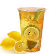
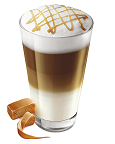
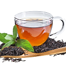
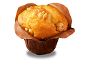

Meniu Starbuzz
Lemon Tea
Ceai de lamaie cu menta si miere.
Se poate servi rece si racoritor cu
gheata
sau cald in zilele friguroase
de iarna.
Caramel Macchiato
Caramel Macchiato cu frisca.
O explozie de caramel, cafea
si frisca pentru cei pretentiosi.
Green Tea
Gustul indiei de sud
intr-o cana de ceai fierbinte.
Muffin
Muffin delicios de banane
si ciocolata pentru iubitorii de dulce.
Istoria Cafelei
Savurosul stimulent are o istorie la fel de bogatã ca gustul care l-a consacrat.
Triburile autohtone din Africa mãcinau boabele nedecorticate şi amestecau pasta cu
grãsime animalã pânã ce obţineau nişte bile pe care le consumau rãzboinicii. Efectul stimulator
al cafelei a fost asociat de multe ori cu un anumit extaz religios, practicat de vraci şi preoţi.
Consumată în cantităţi moderate, cafeaua poate avea efecte benefice asupra sănătăţii datorită
conţinutului ridicat de antioxidanţi (fenol, substanţe volatile) fiind unul dintre cele mai
consumate produse care conţin cofeină.Există două soiuri principale de cafea:
Arabica şi Robusta, diferentiate prin gust şi din aromă.
Arabica este o cafea de calitate superioară, puternic aromată, pură şi fină,
în timp ce Robusta este o cafea tare, cu un gust puternic,
uşor amăruie şi conţine mai multă cofeină. 60% din producţia mondială de cafea este Arabica.
Povestea noastra
Am creat pentru toti iubitorii de cafea o piata virtuala care urmareste sa inglobeaza brandurile
de renume din lumea cafelei. Am cautat sa acoperim cerintele fiecarui segment din piata.
Fiecare client pentru noi este important si dorim sa se regasesca in oferta noastra.
Ceaiul Verde
Ceaiul verde provine din frunzele plantei Camellia sinensis şi este utilizat de către chinezi
de mai bine de 2.000 de ani, ca băutură răcoritoare, datorită numeroaselor proprietăţi terapeutice
de care dispune această plantă.
Va oferim produse pentru tine acasa! Produse pentru tine la birou! Produse pentru afacerea ta!
 COMANDA ONLINE
Aici
COMANDA ONLINE
Aici
REPEDE
FRESH
LA TINE ACASA
Comanda online
Comanda aici cea mai
buna cafea.Gasesti sortimente
diferite pentru fiecare gust